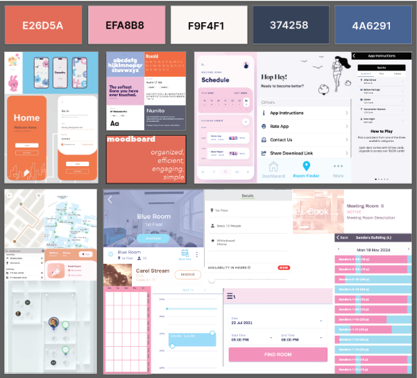
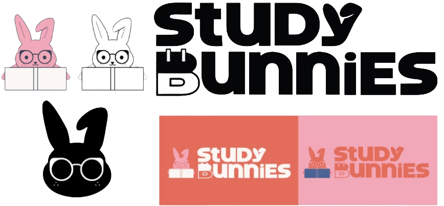
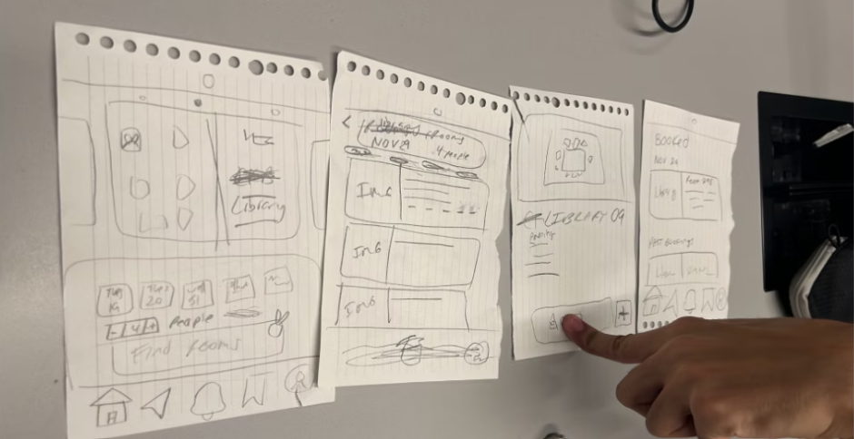
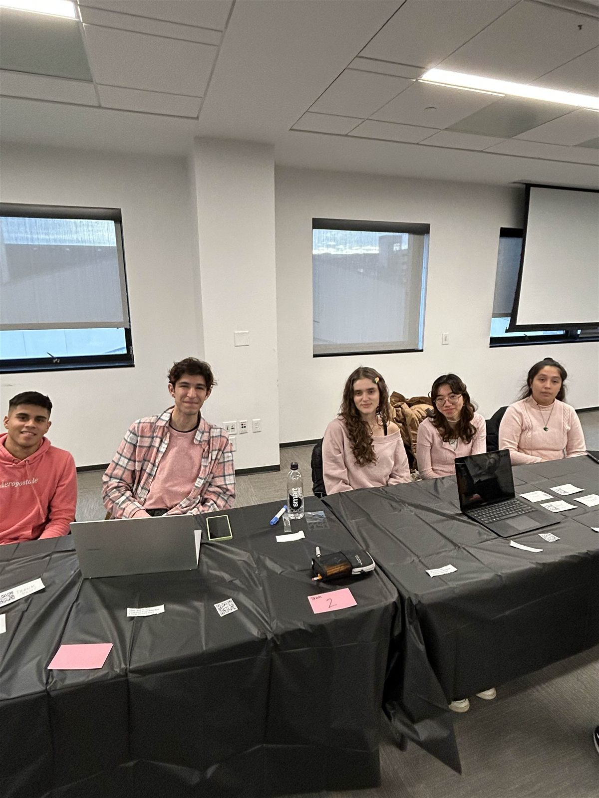
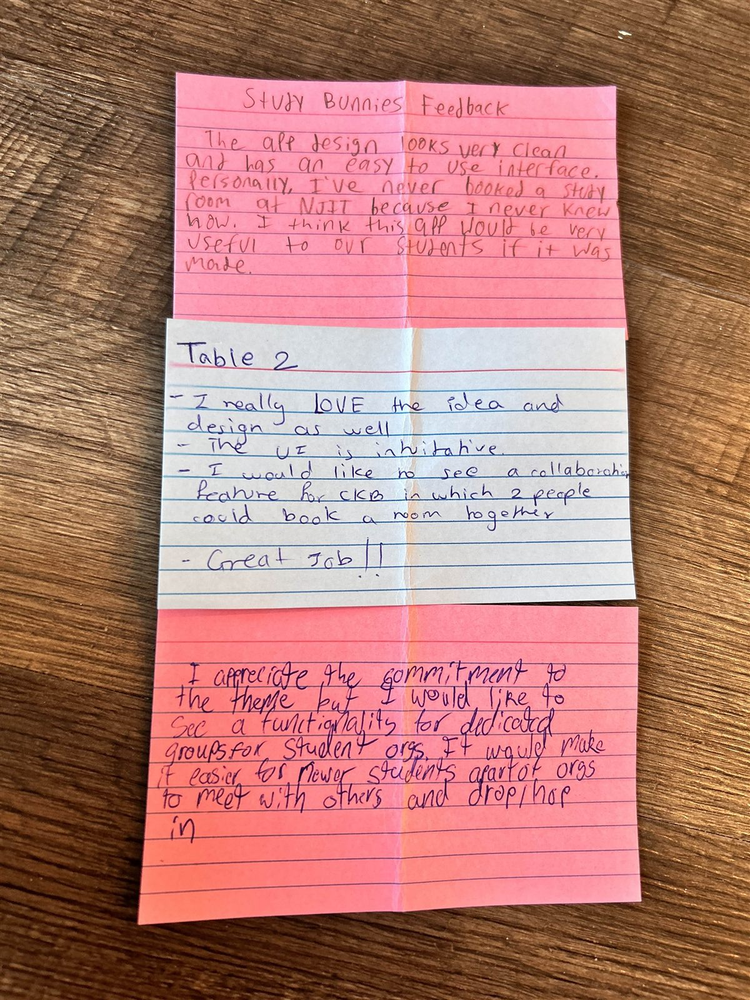

Case Study
New Jersey Institute of Technology (NJIT) students wishing to seek availability for a breakout room to be open at NJIT may now have the opportunity to do so. Some breakout rooms require you to stop by their front desk and see if a room is available. This causes students to seek time out of their day to see if a room is open, and sometimes it may not be, which causes "wasted time."
Students at NJIT are often encouraged to spend time socializing or working within groups. Whether this is because of clubs, group projects, or just a desire to meet up and talk to fellow students on or around campus, having places where students can properly socialize is important. Students have reported feeling as though there aren’t many opportunities to grab quiet spots on campus, where they can speak without interruption or distraction. This can severely impact how students are able to perform in classes where working within groups is a necessity, as well as potentially forcing students who want to hang out in groups to do so outside of campus. The few options they have in order to obtain these quiet spots on campus are hidden behind certain rules that students might not know of, and are still very competitive for students that do know of them. It should be a necessity for this school to make sure that students feel as though they have places where they can interact without these struggles and restrictions.
In order to fix the lack of quiet spaces on campus, our group will be designing and prototyping an app in order to inform and streamline the process of finding and obtaining designated quiet rooms. Students will be taught how to reserve preexisting rooms using existing services, such as the room reservation systems for both Central King Building (CKB) as well as the Van Houten Library in order to guarantee that they know about and can use these spaces. Helping students gain access to these rooms in a welcoming and easy to understand environment will promote collaboration and comradery between students, helping to improve both their social life and their academic endeavors.



These are some low-fidelity wireframes that allowed us to visualize which screens were needed to be prioritized featuring screens such as a home page, reserving a room page, and details on booked breakout rooms.
My team and I decided to showcase this project at our local school's (New Jersey Institute of Technology) SIGCHI Design Fair, where we presented the idea of our work. The guests who showed up got to test our app, and we received constructive feedback. Most guests were satisfied with the overall outcome and believed that this is something that should actually be implemented and developed, as they feel like it will benefit students. In fact, some guests suggested bringing it up to professional NJIT staff to request permission to develop this into an application.


As the UI/UX Designer for Study Bunnies, the main task at hand was to take an often-expressed frustration among students seeking accessible, quiet, and reservable study spaces on campus and build a clear, approachable, intuitive digital experience. As we go through our problem statement, while breakout rooms and quiet classrooms exist on the NJIT campus, inaccessibility regarding unknown availability, rules, and ways of access creates superfluous obstacles toward student success regarding expressed needs to study or collaborate more effectively.
As I made the design, guidance flowed throughout to make clarity, discoverability, and ease of navigation. I focused on trying to create an interface that would allow students to quickly identify available rooms, understand how to use the existing systems to reserve them, and feel confident navigating through campus spaces that have perhaps seemed unclear or underutilized. Visual hierarchy, straightforward navigation patterns, and clear indicators were placed to minimize cognitive load and make the experience approachable for the first time.
The development of the Study Bunnies initiative was a true exercise in collaboration and stakeholder engagement at a new level. Incorporating the perspectives of students, faculty, custodial staff, and university administration allowed our team to not only make the solution user-friendly but also ensure that it was realistic and feasible in terms of constraints. Being present at the NJIT SIGCHI Design Fair to present the project and then instantly receiving feedback from the users helped us in both affirming our design decisions and identifying next steps, such as more filter options and clearer indications of room usage.
What I would have done differently is to bond more with my teammates, as there was a bit of slack in teamwork, and I feel like it was because it was the first time we all met. We didn't know each other's expertise, so we didn't know each other's strengths and weaknesses.
All this made me a stronger designer who could easily turn user feedback and barriers into design solutions. I gained expertise in problem definition, teamwork in design, and presenting positive outcomes for users.